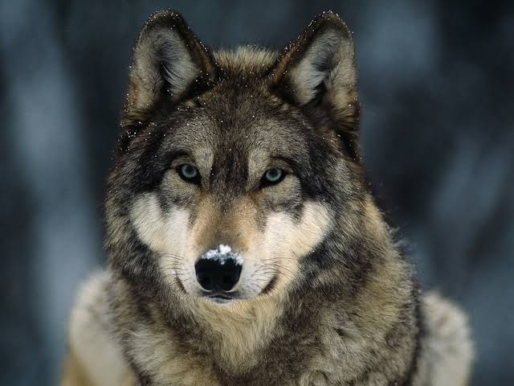

WolfThe wolf, also known as the gray wolf or grey wolf, is a large canine native to Eurasia and North America. More than thirty subspecies of Canis lupus have been recognized, including the dog and dingo, though gray wolves, as popularly understood, only comprise naturally-occurring wild subspecies. |
 |
| Eats | Deer, Moose, Hares, Beaver, Bison, Arctic fox, Elk, Ungulate, Rodents |
| Mass | 30 – 80 kg (Male, Adult), 23 – 55 kg (Female, Adult) |
| Conservation status | Least Concern (Population stable) |
| Speed | 50 – 60 km/h (Running) |
| Height | 80 – 85 cm (Adult, At Shoulder) |
| Trophic level | Carnivorous |